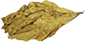
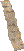
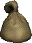
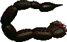
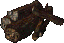

Category:Drugs & Consumables
Jump to navigation
Jump to search
Description:
There is a list of drugs, soft drugs and consumable items. All drugs can be taken once except Rad-X which can used without limit and RadAway - 2 times in a row. Craftable drugs requires Chemist profession and a workbench to be crafted. Some drugs cause addiction that can be healed by Doctors in guarded and unguarded cities or by Antitoxin that can be bought on doctors ( 600 caps in case of protected city, 500 caps in San Francisco).
Effects on Drugs last 30 minutes(60 with Chem Reliant).
Consumables works similar to drugs but can't cause addiction and usually doesn't grand good bonuses. You can take any amount of consumables.
Craftable Drugs
Cigarettes
| Absolutely usual post-nuclear American ciggarettes of famous trademark "Nukeboro". | |
|---|---|
| Effect | +3 to Field of view |
| Addiction | - |
| Weight | 100g |
| Base Price | 100 |
| Exp for Crafting | 105 |
| Requirments to craft | 1x5x |
| Notes | Unlike common sense and certain other server, Cigarettes doesnt require lighter here. They are quite common and easy to obtain on various NPCs and in Bars. |
Healing Powder
|  | |
|---|---|
| A very powerfull healing magic - though it will bring the feeling of sleep to your head. | |
| Effect | Cure 8-18 HP |
| Addiction | - |
| Weight | 453g |
| Base Price | 20 |
| Exp for Crafting | 10 |
| Requirments to craft | 1x |
| Notes | Basic, easy craftatble healing. For novice ideal, wait not really. Yes it's still terrible even for novice, but novice usually won't have anything else so... |
Antidote
| A bottle containing a home-brewed antidote for poison. A milky liquid with floating pieces of radscorpion flesh. | |
|---|---|
| Effect | Cure poison |
| Addiction | - |
| Weight | 453g |
| Base Price | 50 |
| Exp for Crafting | 20 |
| Requirments to craft | 2x Profession: Chemist 1 |
| Notes | Rarely usable, as being poisoned in general is not a big deal. |
Stimpak


Super Stimpak

Mentats

| |
|---|---|
| A pillbox of mind-altering chems. Increases memory related functions, and speeds other mental processes. Highly addictive. | |
| Effect | +2 to CH, +2 to IN |
| Addiction | - |
| Weight | 0g |
| Base Price | 280 |
| Exp for Crafting | 135 |
| Requirments to craft | 1x 1x  Profession: Chemist 1 |
| Notes | Can raise limit of books one can read, usefull to bypass speech filter when you want to talk normally with low int. Helpfull when you need to lead a bigger group of persons. Overall usefull drug. |
RadAway


Rad-X

Buffout

| |
|---|---|
| Highly advanced steroids. While in effect, they increase strength and reflexes. Very addictive. | |
| Effect | +2 to ST, +1 to EN |
| Addiction | -1 to ST, -1 to EN |
| Weight | 0g |
| Base Price | 700 |
| Exp for Crafting | 300 |
| Requirments to craft | 3x Profession: Chemist 3 |
| Notes | Very important drug. It can also serve as kind of temporary bag since increasing ST increases also Carry weight. |
Jet

| |
|---|---|
| Jet is a powerful methamphetamine that stimulates the central nervous system. The initial euphoric rush rarely lasts more than a few minutes, but during that time, the user is filled with a rush of energy & strength. | |
| Effect | +3 Action Points |
| Addiction | -1 Action Point |
| Weight | 0g |
| Base Price | 700 |
| Exp for Crafting | 300 |
| Requirments to craft | 3x Profession: Chemist 3 |
| Notes | The most powerfull drug in the whole game. The boost is incredible strong. You can buy Jet via dialog in Den for 900 each. Find Joey. |
Notcraftable Drugs
Psycho

| |
|---|---|
| An unique delivery system filled with strange and unknown chemicals of probably military origin. It is supposed to increase the combat potential of a soldier. | |
| Effect | +20% to normal dmg. res, -7 to PE, -2 to IN |
| Addiction | -10% Damage Resistance |
| Weight | 0g |
| Base Price | 700 |
| Where to Find? | Dungeons Drug Transaction (Event) |
| Notes | In previous session this drug used to be craftable. This is no longer the case.Don't despair - it is still quite easy drug to get though! |
Nuka Cola

| |
|---|---|
| A bottle of Nuka-Cola, the flavored softdrink of the post-nuclear world. Warm and flat. | |
| Effect | +1 to AP |
| Addiction | - |
| Weight | 0g |
| Base Price | 100 |
| Where to Find? | NPC Bars Raiders and such encounters |
| Notes | Quite Common and cheap,yet very effective. After drinking you'll get a left over bottle cap. |
Antitoxin
Hypo
| A medical injection instrument of some kind. It looks very high tech. You don't know what it's filled with but it appears to have only one dose left. | |
|---|---|
| Effect | Cure more 150-300 HP |
| Addiction | - |
| Weight | 0g |
| Base Price | 500 |
| Where to Find? | Rare loot in Dungeons Drug Transaction (Event) Big Drug Sale Events |
| Notes | If you plan to use them, you shoud remember about short (alt+4) |
Craftable Consumables
Rot Gut

| |
|---|---|
| A very strong liquor, a cleaning fluid, or fuel for your car, you decide. | |
| Effect | -2 to PE for 30 min |
| Weight | 0g |
| Base Price | 20 |
| Exp for Crafting | 40 |
| Requirments to craft | 5x1x Crafts a bath of 5. |
| Notes | Used in crafting of Molotov Coctails and Flamethrower ammo. |
Notcraftable Consumables
Cookie
| A chocolate chip cookie. Yum! | |
|---|---|
| Effect | +1 to max AP |
| Weight | 0 |
| Base Price | 0 |
| Where to Find? | Very rarely in Dungeons or TC Box |
| Notes | Cookies are extra rare but effect they generate last only for about 45 seconds in real time mode. In TB though they will last much longer thus making them quite overpowered in that combat setting. |
Iguana-on-a-stick(Shashlik)
Iguana-on-a-stick
Beer
| Some type of home brewed beer. | |
|---|---|
| Effect | -1 to PE for 30 min |
| Weight | 0g |
| Base Price | 5 |
| Where to Find? | Some NPC's drops it Shops |
| Notes | After drinking you'll get a left over bottle cap. |
Booze
Pages in category "Drugs & Consumables"
The following 19 pages are in this category, out of 19 total.